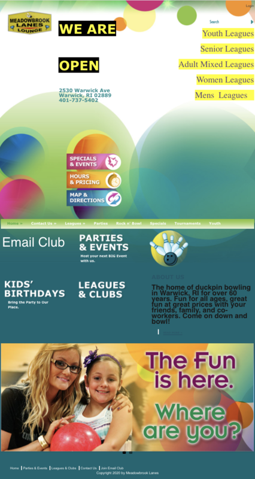
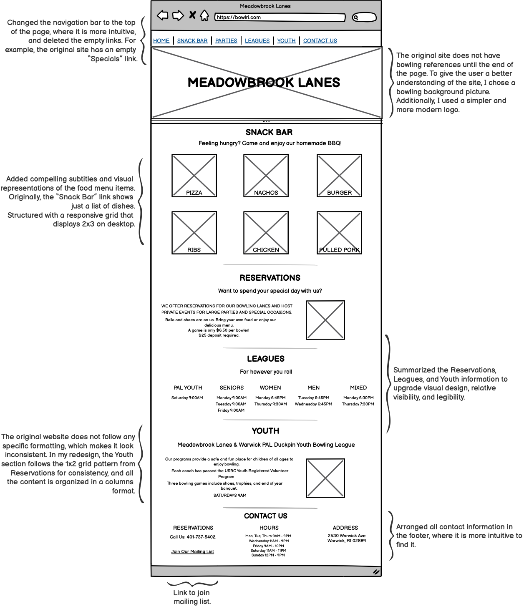
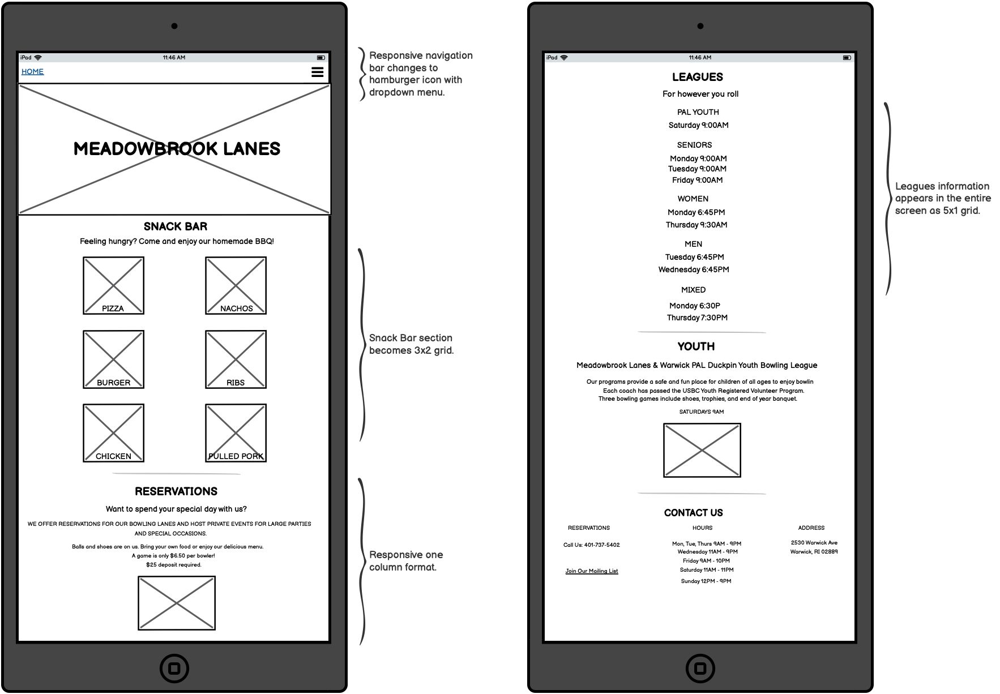
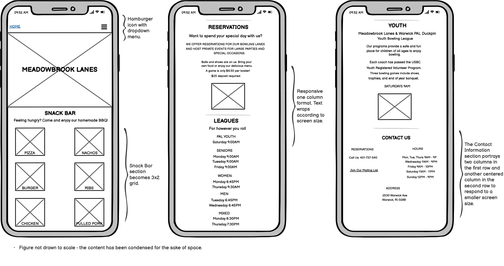
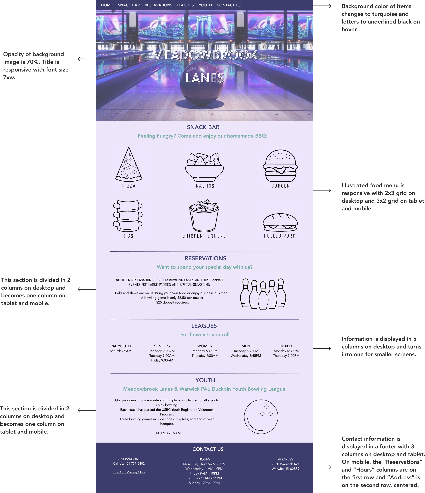
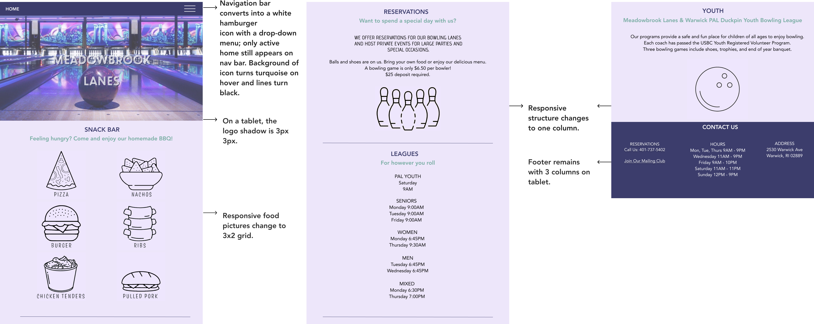
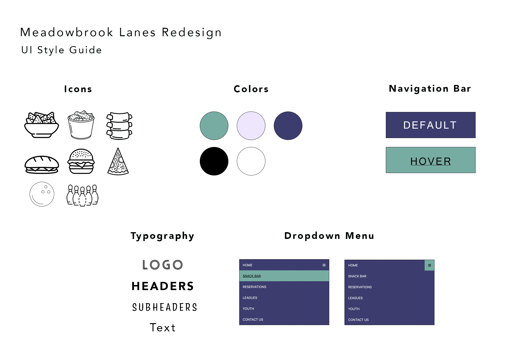

Website Redesign
Context
How many times have we gone to a website that is impossible to figure out?
My friends and I study in Providence and were looking for a place to play
bowling closeby (pre-covid times). We came accross this bowling website and, unfortunately,
due to how visually unappealing and complicated it was to navigate it, we decided to go
somewhere else.
Now I'm going to walk you through how I redesigned
this website.
First, I'll analyze
its problems. Second, I'll show you my low-fi, high-fi prototypes, and design guide, and finally,
I'll show the final result.
Original Website

Usability & Accessibility Redesign
Usability & Accessibility
- The original website has a navigation bar in the middle
of the page that the user would not immediately find unless they scroll. I relocated it at the top of
the page, as it is a more expected and outstandinng place for it, and added the most relevant headings.
- Additionally, many items on the nav bar display dropdown menus, which makes it complicated to
find relevant information. To increase legibility and visibility, I did an all-scroll, one page
format that summarizes all critical information.
- Using a web accessibility evaluation tool, I discovered that the website has 8 empty headings, one empty link, and 5 pictures
are missing alternative text. Thus, I only used the most relevant and complete information and added alternative text to all
images.
- The original website has no consistency in text or structure. I redesigned it following a text hierarchy and a responsive column format
for each section.
Visual Redesign
For improving the visual appeal of the website, I chose a minimalist design that immediately informs that the site is for a bowling
alley, and then changes to a more sutile background with an ordered structure and padding between objects. I also added icons to the
snack bar menu and "Reservations" and "Youth" sections and increased the text contrast to improve legibility.
Low-Fi Prototypes
I used Balsamiq to create low fidelity prototypes for my desktop, tablet, and phone view.
Desktop View

Tablet View

Phone View

High-Fi Prototypes
Then, I used Figma to create my high fidelity prototypes for desktop, tablet, and phone view. Here I included the color palette
and images.
Desktop View

Tablet View
Phone View

Visual Design Style Guide
A detailed style guide for my redesign:

Final Product
And finally, what we've been waiting for:
click here
to see our redesigned bowling website.
We're happy to realize that the redesigned website is responsive --it fits different screen sizes--, has a defined languange and a structural grid order so that
screen readers can properly get the information, and (hopefully) is more visually appealing.
Image Sources
- https://www.pinclipart.com/pindetail/iiwoobw_pizza-coloring-page-pizza-outline-png-clipart/
- https://image.flaticon.com/icons/png/512/541/541836.png
- https://cdn0.iconfinder.com/data/icons/meat-17/256/Food_Line_Outline_-123-512.png
- http://cdn.onlinewebfonts.com/svg/img_478376.png
- https://www.pinclipart.com/pindetail/hRThbi_sandwich-rubber-stamp-subway-sandwich-outline-clipart/
- https://www.iconfinder.com/icons/1913232/fastfood_fried_chicken_food_bucket_chicken_fried_meal_icon
- http://www.clipartbest.com/cliparts/7ia/ode/7iaodejaT.jpg
- https://www.vectorstock.com/royalty-free-vector/bowling-new-ball-icon-outline-style-vector-21377014
- https://wall.alphacoders.com/big.php?i=380057&lang=Swedish